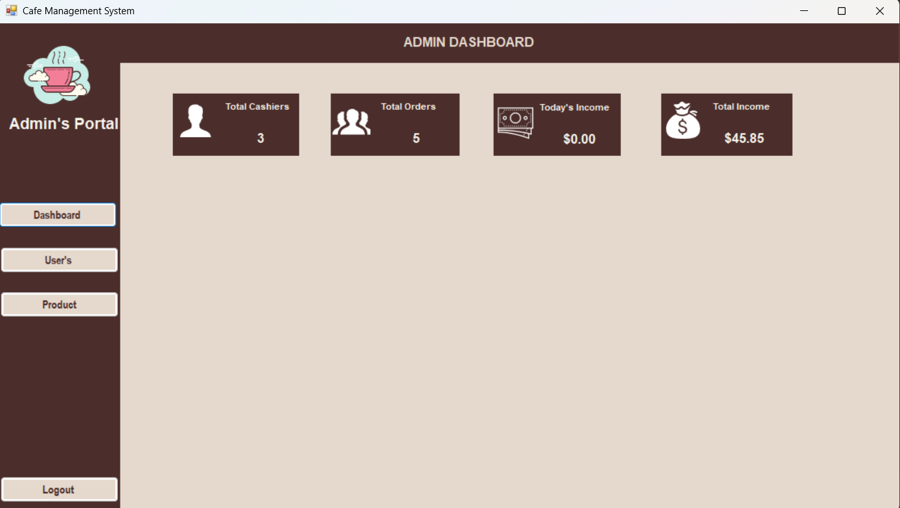
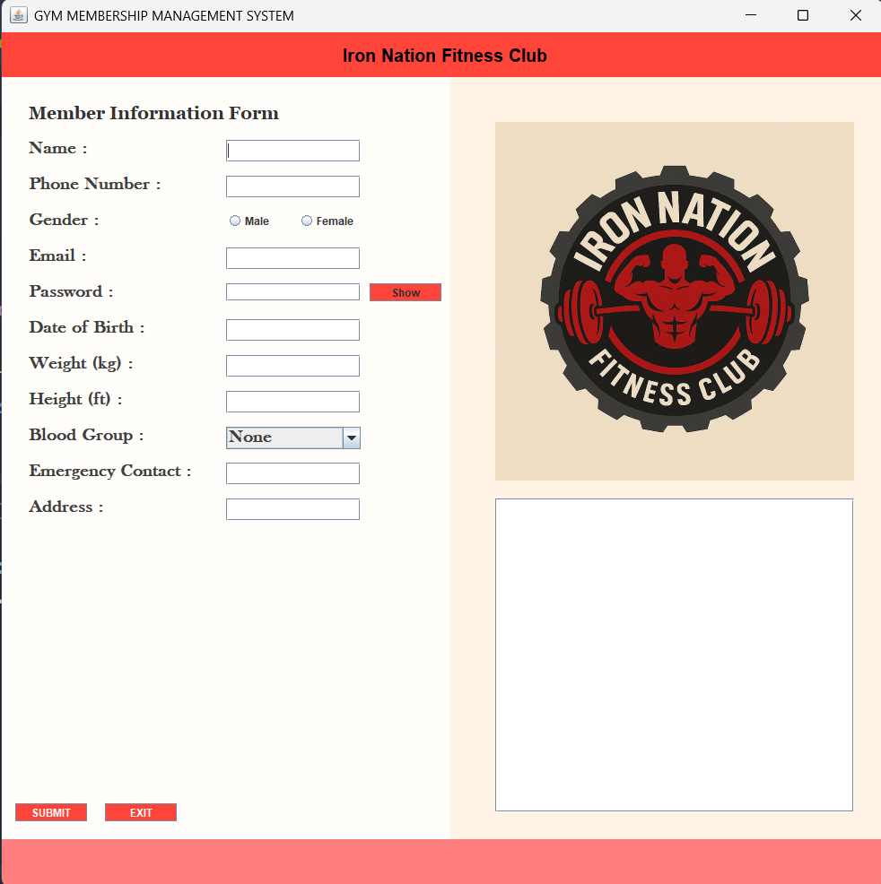

C# Programming
Comfortable with C# programming and applying object-oriented concepts in coursework and project work.
CURRENT LEARNINGI'm a Computer Science and Engineering student interested in C# and .NET development, object-oriented programming, and building useful applications.
Curious about how software works. Motivated to learn how to build it better.
I'm pursuing a Bachelor of Science in Computer Science and Engineering at American International University-Bangladesh (AIUB). Through my coursework, I've been developing my programming fundamentals and learning how to turn concepts into practical solutions.
I'm especially interested in growing within the .NET ecosystem. I enjoy learning through practical projects, understanding how different parts of an application work together, and improving my problem-solving skill set with each new challenge.
Comfortable with C# programming and applying object-oriented concepts in coursework and project work.
CURRENT LEARNINGWorking with core OOP principles in application development.
SOLID FOUNDATIONBuilding desktop application interfaces as part of academic project work.
PRACTICEBasic SQL knowledge and introductory experience with database connectivity.
BEGINNERMaintaining a GitHub profile and developing familiarity with project versioning and sharing.
ACTIVEInterested in expanding my knowledge of the .NET ecosystem.
CURRENT LEARNINGSkill descriptions reflect my current academic and practical experience.

An academic desktop application developed using C# and Windows Forms. This project involved designing a functional admin dashboard and managing core restaurant operations through a user-friendly interface.

A Java desktop application for collecting gym member information, managing records, and supporting membership-related workflows within a simple management system.
I'll add more work here as I build and learn.
American International University-Bangladesh
Science background with a focus on mathematics and technology.
Completed with a strong foundation in core academic subjects.
Completed certification coursework and strengthened my foundation in networking and IT fundamentals.
View certificate ↗I'm interested in learning, collaborating, and growing through new software opportunities and projects.